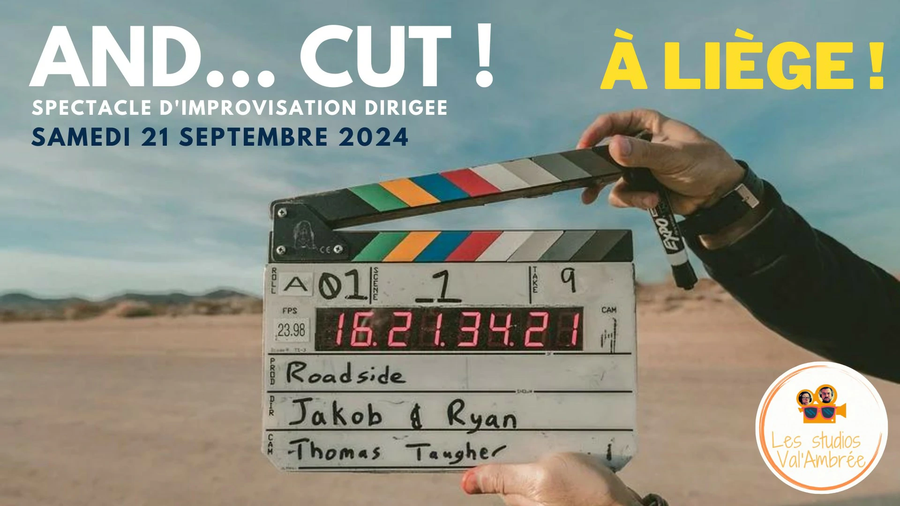

ça va être bien
Retrouve tous nos événements de la saison ici!
2024-2025
-
14
Sept
Rencontre
Les Toustes reçoivent les Tou'Chouss pour une rencontre d'improvisation qui s'annonce haute en couleurs! Deux équipes de comédiens improvisateurs s’affronteront pour le plus grand plaisir du public sous le regard implacable d’un arbitre intraitable.
Voir l'événement -
21
SeptAnd... Cut!
Spectacle d'impro proposé par Ebullition et les Tou'Chouss, venez découvrir un film unique basé sur une affiche de film que VOUS construisez ! Aidés de leur metteuse en scène, les comédiens et comédiennes vous régaleront d'une histoire d'1h15, entièrement improvisée!
Voir l'événement -
5
OctEn Piste!
Les Tou'Chouss vont à Spa pour un spectacle improvisé à partir des suggestions du public!
Voir l'événement -
16
NovRencontre
Les Épatés Gaumais reçoivent les Tou'Chouss à Bastogne pour une rencontre inédite! Rendez-vous à l'Espace 23 à 20h!
Voir l'événement -
7
DécRencontre
Les Capitaines de la BIM jettent l'encre à Liège le temps d'une soirée improvisée avec les Tou'Chouss! A l'abordage: la péniche Légia accueillera les deux équipes pour des histoires hautes en couleurs, c'est pas tous les jours que Bruxelles débarque à Liège!
Voir l'événement -
15
FévTout Chaud, Tou'Chouss
Pour cette deuxième édition, on va essayer de faire monter la température encore plus haut! Tu viens?
Voir l'événement -
14
MarRencontre
Les Tou'Chouss reçoivent la Troupe d'Improvisation du Maroc à l'occasion de l'ouverture de la deuxième édition du Oufti Improvisation Festival!
Voir l'événement -
15
MarOufti Improvisation Festival
Durant tout le week-end, sept équipes venues de plusieurs villes belges ainsi que du Maroc vont s’affronter dans des matchs d’improvisation à un rythme effréné. Ici, pas de texte écrit ni de mise en scène préparée : chaque scène est entièrement improvisée, jouée une seule fois et créée sous les yeux du public, rendant chaque moment unique et explosif!
Voir l'événement -
17
MaiRencontre
Les Tou'Chouss reçoivent l'Habérézina à Liège pour une nouvelle rencontre d'impro!
Voir l'événement
2023-2024
-
23
SeptL'impro dont vous êtes le héros
Un spectacle d'impro pas comme les autres, c'est toi, cher public, qui décide du début, de la fin ou encore du lieu des impros! Viens donc nous lancer des défis et nous donner des thèmes abracadabrantesques. Tu pourras mettre ta touche sur chaque improvisation grâce à un Maître de Cérémonie de qualité!
Voir l'événement -
14
OctLes Tou'Chouss vont à Paris
On reprend les mêmes et on recommence? Viens décider du sort de nos jouteurs.euses le temps d'une soirée, au coeur de la capitale française! Rendez-vous à l'Improvibar dès 23h pour une soirée riche en émotions et en idées!
Voir l'événement -
9
DécTout Chaud, Tou'Chouss
Joignez-vous à nous pour une soirée unique où la science rencontre l'humour dans un tourbillon d'improvisations! Notre équipe de comédiens talentueux sera le sujet d'une expérience extraordinaire, mêlant processus spontanés, effets spéciaux, et impulsions du public. Frissons garantis!
Voir l'événement -
17
FévLes Tou'Chouss VS leurs coachs
Tu aimes l'impro? Tu aimes les Tou'Chouss? Nous on aime nos coachs! En super guest nous aurons: Jeremy Labye (Oh My God), Martin Baudart (Fauves qui peut), Benjamin Pinon (Imprevus) et Michel Lorquet (Théâtre du Petit Soleil). Et notre arbitre Laurent sera dur mais juste! Alors viens t'enjailler avec nous le 17 février au théâtre de l'étuve pour cette rencontre d'impro qui promet d'être plus que sympathique! Le spectacle commence à 20h donc viens quand même un peu avant. Ca se passe au théâtre de l'Etuve à Liège (on te conseille le parking St Denis ou celui près de la passerelle). Les places sont limitées donc pense à réserver!
Voir l'événement -
13
AvrOufti Improvisation Festival
Mais qu'est ce que le OIF? C'est avant tout des rencontres d'impro et du Fun ( avec un grand F, oui!). 7 troupes d'impro venues de Liège, Namur et de la capitale de notre beau royaume de Belgique vont se rencontrer pendant TOUT LE WEEKEND pour votre plus grand plaisir!
Voir l'événement -
25
MaiRencontre
Quelques semaines après leur victoire au OIF, la splendide équipe Oh My God revient à Liège pour rencontrer les valeureux Tou'Chouss ! Ils viennent de Namur pour une rencontre hors du commun. On vous promet une soirée haute en couleurs, des histoires qui vont vous faire rire et rêver.
Voir l'événement